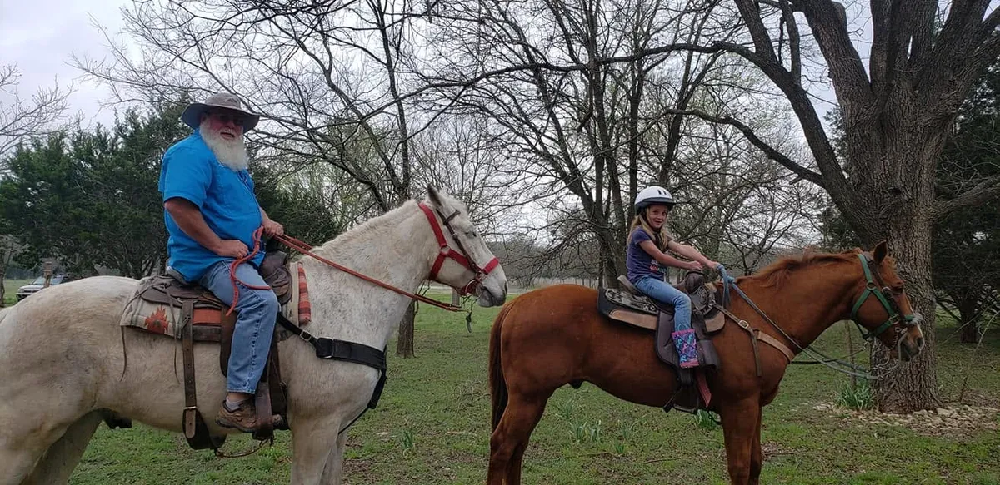
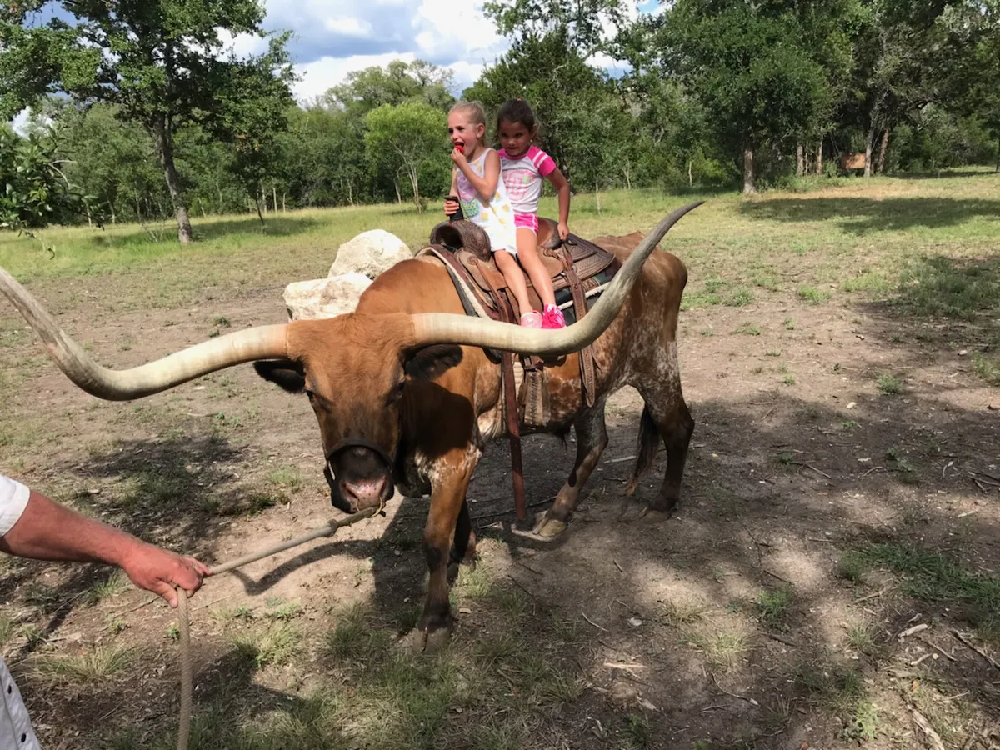

Ride a Horse and Feed Texas Longhorns Near Bandera
Bandera is the Cowboy Capital of the World, and it is about 15 minutes from Al's Hideaway. Compare three local ranches, then come home to a cabin in Pipe Creek.
Check Availability & Book Your StaySaddle Up in the Cowboy Capital of the World

Bandera has been ranch country for generations, and today you can see it from the saddle. Whether you want a one-hour trail ride, a full day at a working dude ranch, or a chance to feed a Texas longhorn, there is an option a short drive from Al's Hideaway.
We are not affiliated with these ranches. They are local businesses we recommend, and each one sets its own prices, ages, and schedules, so check with them when you plan.
Three Places to Ride Near Bandera
Each one offers a different kind of ride.
Rancho Cortez Dude Ranch
A dude ranch in Bandera with daily trail rides, lasso lessons, pools, and a visit to feed the ranch's Texas longhorn cattle.
- One-hour ride: $75 per person
- Dude ranch day visit: $130 half day, $165 full day
- Trail rides for ages 6 and up, arena rides for younger children
Call 830-796-9339. 872 Hay Hollar Rd, Bandera.
Bandera Historical Rides
Guided rides in three places: along the Medina River in Bandera, on their ranch one mile outside town, and at the Hill Country State Natural Area.
- River Ride (1 hour) and Town Ride (2 hours), walk only
- Ranch Ride where you can catch, groom, and saddle your horse
- Hill Country State Natural Area rides for confident riders, ages 10 and up
Reserve through their website.
Outlaw Outfitters
Guided rides from 1 to 6 hours across 5,400 acres of remote Hill Country near Bandera, open seven days a week from 7 AM to 7:30 PM. They can also bring a ride to your own ranch for a special event.
- Sunset rides, river rides, and specialty rides
- Call or text 830-688-2933
- Leave your date, time, ride length, and number of riders
Prices and details come from each ranch's website and may change. Confirm before you go.

Meet the Texas Longhorns
Few animals say Texas like a longhorn, with horns that can span several feet. Two Bandera ranches let you get close to them.
Rancho Cortez includes a trip to visit and feed its longhorn cattle in the full-day dude ranch visit, along with trail rides, lasso lessons, pools, and hiking trails.
Bandera Historical Rides lists a Saturday ranch visit at 2 PM for families. You can meet the horses and longhorns, learn to throw a lasso, take a photo on a horse, and let little ones try pony rides. Reservations are online.
See the Rancho Cortez Day VisitWhich Ride Is Right for You?
A quick way to choose.
Bandera Historical Rides' River and Town rides are walk only, and Rancho Cortez offers guided one-hour rides.
Rancho Cortez offers arena rides for children under 6, and the Bandera Historical Rides Saturday ranch visit includes pony rides for little ones.
Longer rides at the Hill Country State Natural Area or a custom ride with Outlaw Outfitters.
Outlaw Outfitters and Bandera Historical Rides both list sunset rides.
How to Plan Your Ride
Three quick steps to build a weekend around it.
Pick Your Ranch
Choose a ride or ranch visit above, then book directly with them. Book ahead so you get your day and time.
Book Your Stay With Us
Reserve a cabin, RV site, or cowboy campsite at Al's Hideaway. Book 2+ nights and use code FUN to save 10%.
Ride, Then Relax
Head to Bandera for your ride, then come back to the pool, MeMaw's Country Store, and a campfire.
A Cowboy Weekend Near Bandera
An easy way to fill your trip.
Ride with one of the Bandera ranches above.
Lunch, saloons, and Old West charm. See our Bandera guide and rodeo season guide.
Try the Camel Farm, a private animal encounter, or Highland cows.
Grab firewood at the store and watch the Milky Way with no city noise.
More to explore: the full Texas Hill Country guide, our cabins, and RV sites and camping.
Stay Where the Trip Really Happens
Al's Hideaway is a family-owned, pet-friendly retreat in Pipe Creek with no pet fees and no cleaning fees.

Real beds, A/C, and pets always free. See the cabins.

10 full-hookup RV sites and 9 cowboy campsites. See RV & camping.

Cool off after your ride and stock up at MeMaw's Country Store.